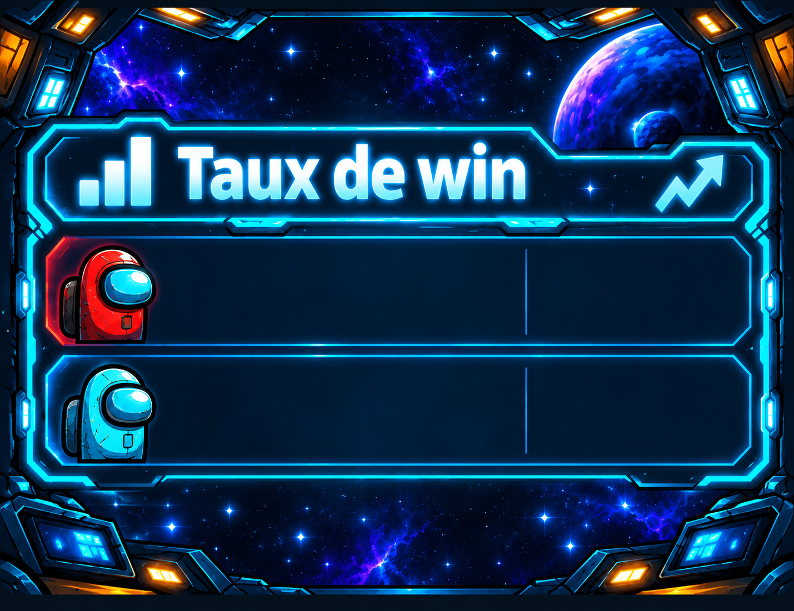
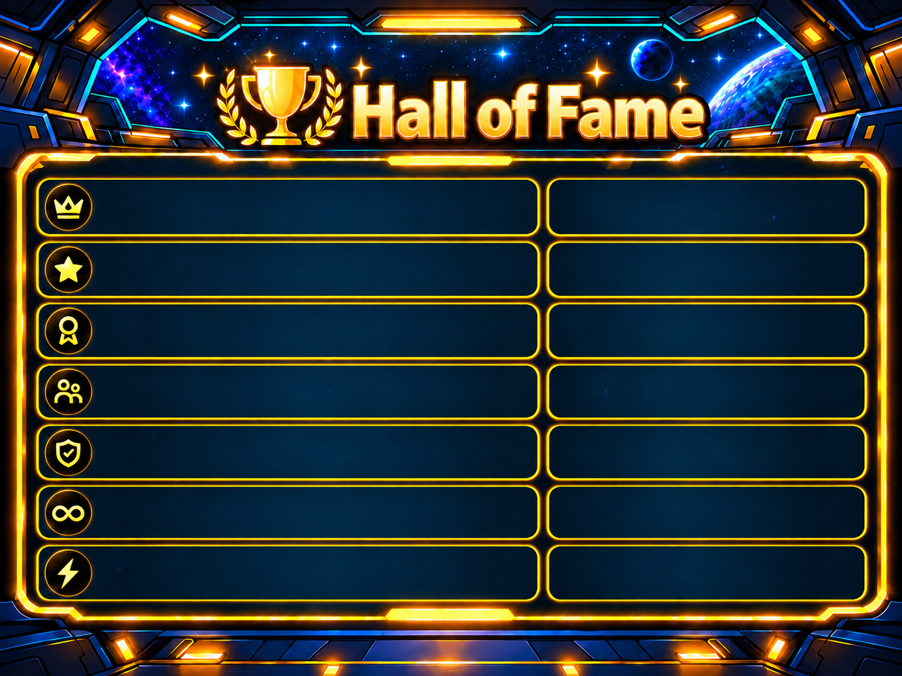
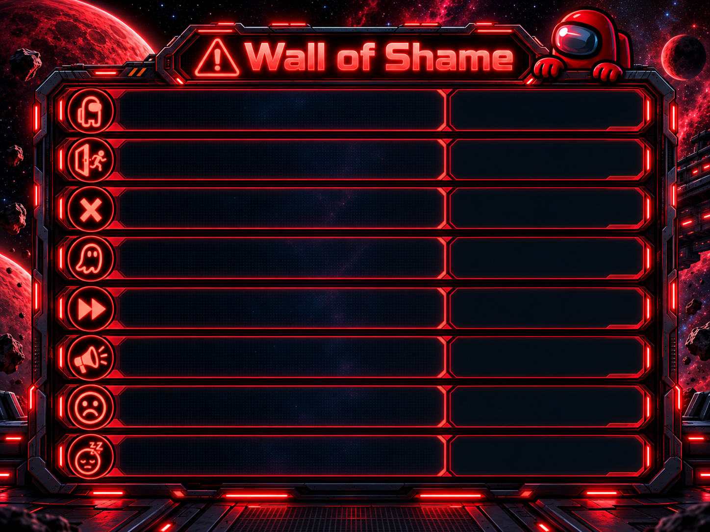
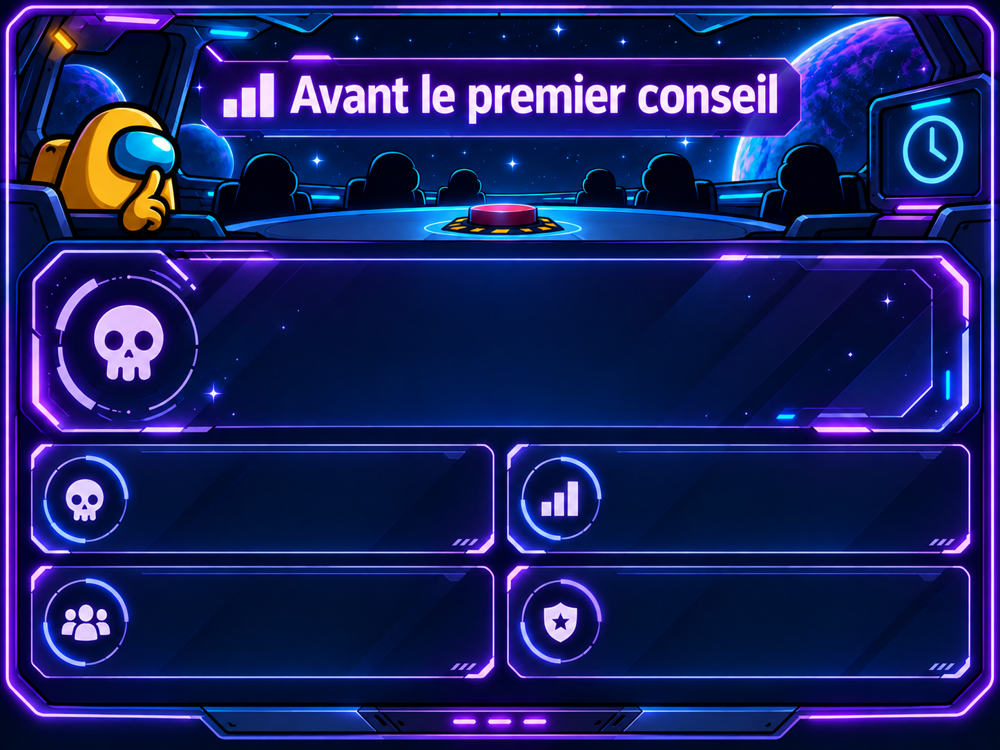
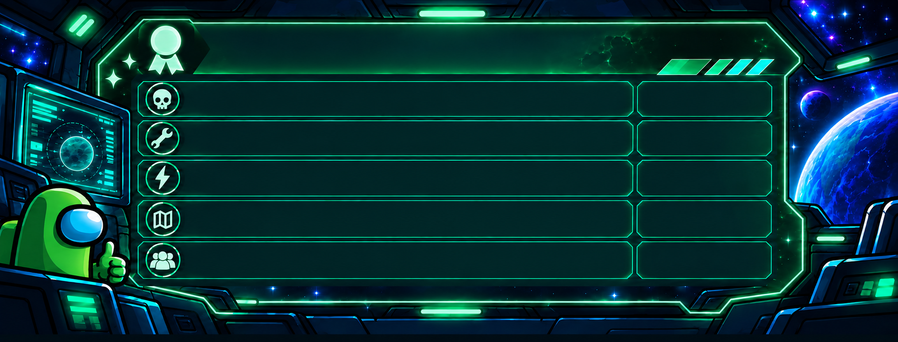

L’équipage perd en moyenne
0 Crewmate
avant le premier conseil

Mentions honorables
Sessions
Choisis un mois : toutes les soirées de ce mois apparaissent dessous.
SESSION
28 septembre 2026
Résultats
Participation & survie
Actions de la soirée
Votes
Comparatif des joueurs
| Joueur | Games | Victoires | Imposteur | Kills | Reports | Self | Réparations | Survie Crew | Justesse vote | Quêtes |
|---|
Résultat des games
| Game | Map | Camp gagnant | Méthode | Morts T1 |
|---|
Données présentes
Performance
Reports & survie
Activité & quêtes
Votes
Statistiques Imposteur
Maps & sabotages
Games
| Game | Map | Rôle | Résultat | Fin | Reports | Self | Sabotages | Réparations | Kills | Sortie | Ordre de mort | Tour | Quêtes | Note |
|---|
Importer un log GameLogger (.json)
CREWTEST analyse le fichier localement, crée la soirée si nécessaire et prépare la game sans contacter Supabase.
Saisie d’une game
Chaque fiche peut contenir plusieurs événements et plusieurs sabotages. Enregistrer met à jour les données partagées dans Supabase.
Événements
Kills, mort du streamer et self-reports. Les reports normaux sont saisis dans le compteur au-dessus.
Réparations de sabotage
Nombre de sabotages auxquels ce joueur a participé à la réparation, Crew ou Imposteur.
Sabotages
0 sabotage enregistré dans cette game. Le favori est calculé automatiquement.
Sabotage le plus utiliséAucun
Fin de game
Gestion
Connexion Admin ou Helper. Les Helpers peuvent saisir et modifier les fiches ; les réglages structurels restent réservés aux Admins.
Ajouter une session
Crée une nouvelle soirée à partir de sa date. Elle sera ensuite disponible dans Sessions, Saisie et la sélection des participants.
Gérer les sessions
Corrige la date d’une soirée ou supprime-la en cas d’erreur. Modifier la date conserve les games, fiches et participants associés.
Participants de la soirée
Seuls les membres cochés apparaîtront dans la saisie de cette session. La page Joueurs garde tous les membres du Crew.
Gérer les streamers
Ajoute les membres du Crew qui pourront ensuite être sélectionnés dans la saisie et apparaître dans la page Joueurs.
Fiches enregistrées
Les Admins peuvent modifier ou supprimer les fiches. Les Helpers peuvent les modifier, mais pas les supprimer.